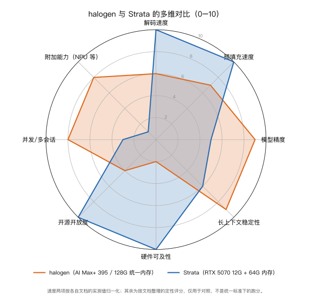

本地部署Qwen3.8-Flash-Next模型的两条路线：halogen（AI Max+ 395+128G 统一内存）对比 Strata（CUDA 12G 显存 + 64G 内存）
阿里的 Qwen3.8-Flash-Next 开源之后，社区里想在自己机器上把它跑起来的人不少。先有人做了 halogen，专门在 AMD 的 AI Max+ 395（Strix Halo，128G 统一内存）上跑这个模型，速度能到 30 多 tokens/s；后来又有人做了 Strata，用一张 12G 显存的 CUDA 卡加 64G 内存，把这个 125B 的模型跑到了 60 多 tokens/s。同一个模型，两条硬件路线，本文根据两个项目各自的文档，把它们放在一起对比。
先说清楚这两份材料是什么。halogen 叫 halogen-flash-server，引擎本身闭源，只发布容器镜像，GitHub 上的仓库是部署说明、文档、启动脚本和基准工具。Strata 是一个开源的推理引擎，C++ 和 CUDA 写成，源码都在仓库里，可以自己编译。
同样是针对 Qwen3.8-Flash-Next，halogen 是"把模型整个放进大统一内存，再把 kernel 打磨到只贴合这一颗 APU"，Strata 是"把模型拆成分层结构，去迁就小显存和一台普通 PC"。前者精度和稳定性更好但绑硬件，后者更通用、更开源、峰值更快但精度有取舍。
两个项目分别是什么
halogen-flash-server 的目标写得很窄：一台 AMD Strix Halo、一个模型家族。它不用通用运行时，也没有可移植层和回退路径，每段 kernel 都是为 gfx1151 这一颗 GPU 写的。也正因为只针对一颗芯片和一个模型，它能做一些通用引擎做不到的事，代价是只能跑在这一种硬件上。
Strata 是通用的做法。它支持从 RTX 20 系到 50 系的多张 NVIDIA 卡，也有一套实验性的 AMD HIP 后端，覆盖 RDNA2/3/4 的离散显卡。模型方面，除了原版 Qwen3.8-Flash-Next，它还支持 ISTA-DASLab 的量化版、剪枝过的 Coder 版、Swift 1.5 微调版，以及 Unsloth 的 4bit 版。
简单说，这两者方向正好相对，一个把范围压到最小换取速度和确定性，一个把范围放开换取适配能力。
硬件形态决定了各自的走法
这个模型的体量是关键：125B 参数，外加一张 51B 参数的 n-gram 表。按 halogen 文档的换算，这套东西在 BF16 下是 335 GiB，FP8 下是 173 GiB，而 AI Max+ 395 能用的统一内存只有 124 GB 左右。也就是说，哪怕用 FP8 也放不下，没有"不量化直接装进去"这条路，两个项目都必须先量化。
在必须量化的前提下，halogen 的办法是压到 4 到 6 bit（具体档位见下一节），让 checkpoint 小到能整个放进统一内存。它对主机的要求和常见做法相反：BIOS 里给 iGPU 的专用显存（UMA frame buffer）切到最小（参考机约 512 MiB），同时把 GTT 开到约 124 GiB（文档给的参数是 amdgpu.gttsize=126976、ttm.pages_limit=32505856，两者换算都是 124 GiB），也就是把几乎全部 128G 内存通过 GTT 交给 GPU 用。62 GiB 的权重就常驻在这块共享内存里，n-gram 表单独放磁盘分页读，KV 池在启动时一次性预留。这样它不需要在显存和内存之间搬专家，优化点落在 kernel 是否贴合这颗 APU、矩阵库的调优表、以及内存带宽和功耗上。代价在别处：加载完之后留给其他大程序的空间不多，文档说大约剩十几 GiB，这样这台机器就建议只用来运行模型。
12G 显存搭配 64G 内存的情况下，预算就更紧了，所以 Strata 量化得更狠（专家低到 2 到 3 bit 的 IQ2_XS、IQ3_XXS、IQ3_S 等），而且即便如此也装不下，只能把模型拆开：注意力、门控残差、路由器、共享专家、输出头、KV cache 和一块按路由热度排序的"专家缓存"留在显存；全部专家放内存由 CPU 就地算没命中的部分；那张 n-gram 表放 SSD，每个 token 只读几行。项目文档里提到，专家的分层（显存、内存、SSD）和缓存命中率都是拿真实路由数据先量过再定的。它的瓶颈因此更多在显存与内存之间的搬运、以及 CPU 这一侧的耗时上。
两个项目都得量化，区别在于 halogen 负担得起更高的精度、能让模型整体驻留，而 Strata 得压得更低、并且不断在显存、内存和 SSD 之间搬数据。后面所有的差别，基本都是从这里派生出来的。
精度和内存占用
因为内存形态不同，两边选择的量化精度也不同，这点在对比速度时要注意。
halogen 文档里报了整体 5.53 bpw（按 checkpoint 的 tensor 表算出来的）。新版 checkpoint 一个文件 62.1 GiB，平均每个权重 4.16 bit：专家和主体 4 bit，中间那些混合层 6 bit，模型自带的 MTP 草稿头（multi-token prediction，多 token 预测，也就是投机解码里负责"猜"下一个词的那个模块，不是单独的草稿模型）的稠密投影 8 bit；n-gram 表单独一个 FP8 文件 47.7 GiB，是分页读的，不常驻。它特意说明 4bit 不是"优化"而是"能装下的前提"，并且把每个 tensor 家族用了多少位写进了文档，方便用算术核对。旧版 w4b 更占地方，基础文件 115.55 GiB 再加一个 2.31 GiB 的精度 sidecar。
Strata 按量化档位分：Q2_0 大约占 37.6G（内存加显存），IQ2_XS 约 39.2G，IQ3_XXS 约 47G，IQ3_S 约 54.8G。Coder 版砍掉一半专家，分片只有 29.6G，32G 内存的机器就能跑。还有一个实验性的 Unsloth UD-Q4_K_XL，111G，专家读不动就靠 SSD。可以看到 Strata 的专家量化压得比 halogen 低，因为它要在 12G 显存加 64G 内存这个更紧的预算里放下同一套权重。
性能对比
两边的机器、量化、上下文条件都不一样，数字不能直接相等地比，但放在一起能看出各自的位置。
Strata 公布的是 RTX 5070（12G）、Ryzen 5 7600、64G 内存上的结果：
| 档位 | 短对话输出 | 128K 上下文输出 |
|---|---|---|
| Q2_0 | 93 tok/s | 74 tok/s |
| IQ2_XS | 79 tok/s | 63 tok/s |
| IQ3_XXS | 62 tok/s | 49 tok/s |
| IQ3_S | 53 tok/s | 46 tok/s |
| Coder | 55 tok/s | 43 tok/s |
读提示词的速度按它给的数字，32K 的提示约 15 秒，换算下来 2000 多 tok/s；3090（24G）估计能到 100 到 140 tok/s。也就是说，"60+ tokens/s"对应的是它快档的短对话场景。
halogen 公布的是 Ryzen AI Max+ 395、128G 统一内存、ROCm 7.14、大约 85W 持续功耗上的结果：
| 项目 | halogen-flash |
|---|---|
| prefill 8192 tokens | 1584 tok/s |
| prefill 32768 tokens | 1567 tok/s |
| prefill 131072 tokens | 1517 tok/s |
| decode 串行贪心，1.5K / 32K 上下文 | 37.6 / 34.1 tok/s |
| decode 带 MTP 投机，散文 / 代码 | 44.8 / 49.9 tok/s |
| decode 带草稿，服务端 32K（十个提示的均值） | 46.0 tok/s |
| 编程 agent 回合，草稿加 prompt lookup | 55.7 到 56.3 tok/s |
它有一个特点：prefill 随上下文衰减很小，131072 tokens 还有 32768 的 97%。decode 随深度也稳，从 1.5K 到 32K 只降了约 7%。另外它说 100000 tokens 的多轮对话，第一轮约 88 秒，之后每轮约 2 秒，靠的是默认开的 prompt cache。
把两张表放一起看，方向是清楚的：Strata 用更小、更便宜的显卡拿到了更高的 decode 峰值，代价是更低的量化精度和更吃内存/SSD 的分层搬运；halogen 用统一内存换来了整体更高的精度和更平稳的长上下文表现，峰值 decode 反而略低，而且这台机器的功耗和价格都明显更高。
两边相同的地方
虽然硬件路线差很多，有几件事两边都做了，而且思路接近。
都用投机解码，而且都用两个草稿来源：模型自带的 MTP 草稿头，加上从请求自身文本里找重复片段的 prompt lookup。Strata 文档里叫 prompt lookup，halogen 也一样，编程场景里大约一半的生成 token 是这种"抄前面出现过的话"。两边都强调：草稿只负责猜，真正输出的每个 token 都由完整模型验证，所以 temperature 为 0 时结果和串行贪心逐字节一致，投机只是加速，不牺牲质量。
都默认或强烈依赖前缀缓存。halogen 的 prompt cache 默认开，多轮对话只读新增部分。Strata 也维护会话和检查点缓存，新对话若共享同一段系统提示，就从那段之后开始读。
都提供 OpenAI 兼容的接口，halogen 还提供 Anthropic Messages 接口给 Claude Code 用，Strata 同样两个都给。两边都有 thinking 档位，都能接 agent 类客户端。
还都用同一个模型的 n-gram/PLE 表，当然了，因为用的都是同一个 qwen3.8-flash-next。
两边不同的地方
第一是开放性。Strata 是 MIT 协议，引擎源码公开，可以自己编译、改、看实现。halogen 的引擎是闭源的，以编译好的二进制放进容器镜像发布，仓库里只有部署说明、文档和基准工具，项目自己也写明引擎源码不在仓库里。
不过 halogen 的授权并不苛刻。它的 LICENSE.md 是一份最终用户许可（EULA），标注版权所有，但给出的权利很宽：免费使用、允许商用和量产、允许把未修改的镜像原样再分发（包括镜像到自己的 registry）、明确允许跑基准并公布结果，也明确不禁止逆向工程，没有遥测、默认不联外网。唯一实质限制是不能把修改过的版本当作 halogen 分发。所以它是闭源、不给源码，但不是不能用。仓库之所以说不接受 pull request，是因为补丁进不到那个闭源引擎里。
第二是部署门槛。Strata 是在自己机器上装好、下模型、直接跑，Windows 和 Linux 都行。halogen 是一台 AMD Strix Halo 上跑容器，文档对主机有明确要求：内核要有 gfx1151 的修复、要开 SVM、原生 Linux（不支持 WSL2）、还要独占整机；甚至 IOMMU 关闭与否都会影响 prefill，文档说关了在参考机上值 13 到 16%。
第三是并发。Strata 文档里写的是同一时间处理一个请求。halogen 有一个 KV 池和多个 slot，默认支持几个会话轮流生成，槽位数在启动时固定（最多 64，但文档说超过四个流的吞吐增长很慢），批量请求和单请求输出一致。
第四是 NPU。AI Max+ 395 带 NPU，halogen 可以把小模型（一个 0.8B 分类器、0.6B 的 embedding、0.6B 的 rerank）放在 NPU 上，和主模型共用一个端口。Strata 没有这个能力。
第五是可移植性和量化自由度。Strata 支持多代 NVIDIA 卡，还有若干 AMD 卡（RDNA2/3/4）的 HIP 后端，量化档位多，能按自己的显存挑。halogen 只能用 AI Max+ 395 的 gfx1151 这一颗，精度也是固定的几套 checkpoint。
各自适合谁
如果你手上已经有一张 12G 或 24G 的 NVIDIA 卡，配 64G 内存，想在这个预算里把模型跑快一点，Strata 是对路的选择，而且能自己编译、自己调量化。它的代价是量化压得低、长上下文和内存/SSD 搬运更吃资源，项目文档也坦白长上下文和质量这块还有没验证的部分。
如果你有一台 Strix Halo（AI Max+ 395、128G 统一内存）并且可以独占它做本地模型服务，halogen 是更省心的方案：精度更高、长上下文更稳、部署就是一条容器命令，还顺带能用 NPU 跑小模型。它的代价是绑死在这一颗芯片上、引擎闭源、而且这台机器基本得专门给它用。
全面对比
把前面提到的各个维度放到一张表里：
| 对比项 | halogen | Strata |
|---|---|---|
| 定位 | 单芯片、单模型家族的专用引擎 | 通用推理引擎，支持多种模型变体 |
| 目标硬件 | AMD Strix Halo（AI Max+ 395，gfx1151），128G 统一内存 | NVIDIA RTX 20–50 系（12–24G 显存）+ 64G 内存；另有实验性 AMD HIP 后端（RDNA2/3/4 离散卡） |
| 系统与部署 | 原生 Linux + 容器镜像；要求特定内核（gfx1151 修复、SVM），不支持 WSL2 | Windows / Linux；本地安装或自行编译 |
| 发布精度 | 整体 5.53 bpw；checkpoint 4.16 bpw（专家与主体 4bit、混合层 6bit、MTP 头 8bit） | 多档量化：Q2_0 / IQ2_XS / IQ3_XXS / IQ3_S，另有 Coder、Swift 1.5、Unsloth 4bit |
| 权重内存占用 | 62.1 GiB 常驻；n-gram 表 47.7 GiB 磁盘分页 | 37.6–54.8 GiB（内存+显存）；Coder 29.6 GiB |
| 专家处理 | 全部常驻统一内存，不搬专家 | 三层：显存专家缓存 / 内存全部专家（CPU 算未命中）/ SSD n-gram 表 |
| 预填充速度 | 1517–1584 tok/s，随深度几乎不衰减 | 约 2171 tok/s（Q2_0，32K 提示） |
| 单流解码速度 | 串行 37.6 / MTP 46.0 / 编程 agent 56.3 tok/s | 53–93 tok/s（按量化档） |
| 投机解码 | MTP 头 + prompt lookup | MTP 层 + prompt lookup（在线性价比策略） |
| 前缀缓存 | 默认开，续聊只处理新增 | 会话 + 检查点缓存 |
| 并发 | KV 池 + 多 slot，默认几个会话轮流生成 | 一次处理一个请求 |
| 图片（视觉） | 支持（编码器可跑 GPU/CPU） | 支持（可选 vision；AMD 后端目前仅 CPU） |
| NPU | 可把分类/embedding/rerank 小模型放 NPU | 无 |
| API | OpenAI + Anthropic + Responses | OpenAI + Anthropic |
| 开源 | 引擎闭源（EULA：免费用、可商用、可原样再分发，不禁止逆向） | MIT 开源 |
| 可移植性 | 仅 gfx1151 一颗 | 多代 NVIDIA + 离散 AMD |
| 可复现性 | temp 0 与串行贪心逐字节一致；批量与单请求一致 | temp 0 投机可复现（需关闭自适应层） |
| 适合场景 | 有 Strix Halo 且能独占做本地服务 | 有小显存 N 卡 + 大内存，想省钱、可自定制 |
可视化对比

雷达图把八个维度放在一起看：解码速度、预填充速度、模型精度、长上下文稳定性、硬件可及性、开源开放度、并发/多会话、附加能力（NPU 等）。其中速度两项按各自文档的实测值归一化，其余是按文档整理的定性评分，只用于对照，不是统一标准下的跑分。同一张图也导出了高清 PNG：images/qwen38-radar.png。
参考文献
- 模型：Qwen3.8-Flash-Next（阿里 Qwen 团队）https://modelscope.cn/models/Qwen/Qwen3.8-Flash-Next
- halogen-flash-server（Peonist）https://github.com/peonist-ai/halogen-flash-server
- Strata（Niko1221）https://github.com/Niko1221/Strata